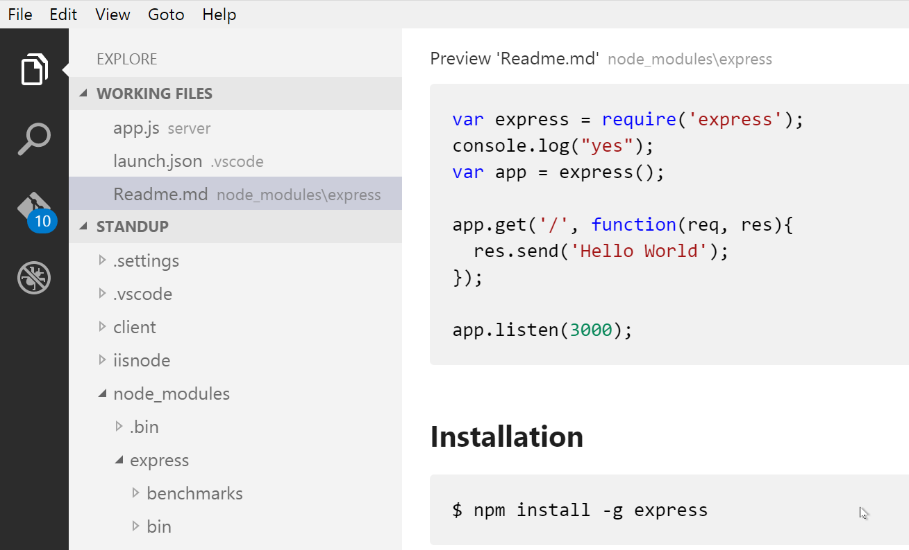
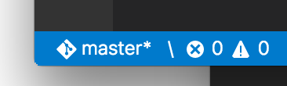

Markdown and VS Code - Markdown与VS Code
Working with Markdown in Visual Studio Code can be pretty fun and there are a number of Markdown specific features that will help you be more productive.
利用VS Code写就Markdown文档将很有乐趣并享有许多的Markdown写作特性以增强你的生产力。
Markdown Preview - Markdown预览模式
VS Code supports Markdown files out of the box. You just start writing Markdown text, save the file with the .md extension and then you can toggle the visualization of the editor between the code and the preview of the Markdown file; obviously, you can also open an existing Markdown file and start working with it. To switch between views you just have to press kb(workbench.action.markdown.togglePreview) in the editor. You can view the preview side-by-side (kb(workbench.action.markdown.openPreviewSideBySide)) with the file you are editing and see changes reflected in real-time as you edit.
VS Code原生支持对于Markdown的写作，你只需运行VS Code并写作Markdown文档并保存为.md后缀，之后你将可切换Markdown文本的渲染模式，以脚本模式或可视化模式，显然你也可以从打开一个Markdown文本作为编辑的起点，仅需要按下kb(workbench.action.markdown.togglePreview)便可以切换渲染模式，同时你可以通过按下kb(workbench.action.markdown.openPreviewSideBySide)开启对比模式，在同屏中观察渲染结果和脚本，当然这两种操作均在编辑器内进行。
Here is an example with a very simple file.
这是一个简单的文件示例

Tip: You can also click on the icon on the top right of the preview window to switch back and forth between source and preview mode.
注：你也可以通过点击渲染窗口顶部右方的相应按键去切换脚本或渲染模式
Using your own CSS - 使用你自己的CSS
By default, we use a CSS style for the preview that matches the style of VS Code. If you want to use your own CSS for the Markdown preview, update the "markdown.styles": [] setting with the comma-separated list of URL(s) for your style sheet(s).
默认的，我们使用CSS风格的预览模式用以适应VS Code的风格。如果你想用自己的Markdown预览风格，请使用逗号分隔的URLs升级"markdown.styles": [] setting。
For instance, in the screen shot above we used a custom CSS to change the default font for the page and changed the color for the H1 title.
举个例子，在文中的预览截图即为应用了我们自己定制的CSS样式，其中修改了默认字体和H1标题的颜色
Here is the relevant CSS:
这是相关的实现用CSS：
body {
font-family: 'Segoe UI', Tahoma, Geneva, Verdana, sans-serif;
}
h1 {
color: cornflowerblue;
}
Use File > Preferences > Workspace Settings to bring up the workspace settings.json file and make this update:
// Place your settings in this file to overwrite default and user settings.
{
"markdown.styles": [
"Style.css"
]
}
Snippets for Markdown
There are several built-in Markdown snippets included in VS Code - simply press kb(editor.action.triggerSuggest) (Trigger Suggest) and we will give you a context specific list of suggestions.
Tip: You can add in your own User Defined Snippets for Markdown. Take a look at User Defined Snippets to find out how.
Compiling Markdown into HTML
VS Code can integrate with Markdown compilers through our integrated task runner. We can use this to compile .md files into .html files. Let's walk through compiling a simple Markdown document.
Step 1: Install a Markdown compiler
For this walkthrough, we will use the popular Node.js module, marked.
npm install -g marked
Note: There are many Markdown compilers to choose from beyond marked, such as markdown-it. Pick the one that best suits your needs and environment.
Step 2: Create a simple MD file
Open VS Code on an empty folder and create a sample.md file.
Note: You can open a folder with VS Code by either selecting the folder with File > Open Folder... or navigating to the folder and typing
code .at the command line.
Place the following source code in that file:
Hello Markdown in VS Code!
====================
This is a simple introduction to compiling Markdown in VS Code.
Things you'll need:
* [node](https://nodejs.org)
* [marked](https://www.npmjs.com/package/marked)
* [tasks.json](/docs/editor/tasks.md)
## Section Title
> This block quote is here for your information.
Step 3: Create tasks.json
The next step is to set up the task configuration file tasks.json. To do this, open the Command Palette with kb(workbench.action.showCommands) and type in Configure Task Runner, press kbstyle(Enter) to select it.
It will present a list of possible tasks.json templates to choose from. Select Others since we want to run an external command.
This generate a tasks.json file in your workspace .vscode folder with the following content:
{
// See http://go.microsoft.com/fwlink/?LinkId=733558
// for the documentation about the tasks.json format
"version": "0.1.0",
"command": "echo",
"isShellCommand": true,
"args": ["Hello World"],
"showOutput": "always"
}
Since we want to use marked to compile the Markdown file, we change the contents as follows:
{
// See http://go.microsoft.com/fwlink/?LinkId=733558
// for the documentation about the tasks.json format
"version": "0.1.0",
"command": "marked",
"isShellCommand": true,
"args": ["sample.md", "-o", "sample.html"],
"showOutput": "always"
}
Tip: While the sample is there to help with common configuration settings, IntelliSense is available for the
tasks.jsonfile as well to help you along. Usekb(editor.action.triggerSuggest)to see the available settings.
Under the covers, we interpret marked as an external task runner exposing exactly one task: the compiling of Markdown files into HTML files. The command we run is marked sample.md -o sample.html.
Step 4: Run the Build Task
As this is the only task in the file, you can execute it by simply pressing kb(workbench.action.tasks.build) (Run Build Task). At this point, you should see an additional file show up in the file list sample.html.
The sample Markdown file did not have any compile problems, so by running the task all that happened was a corresponding sample.html file was created.
Automating Markdown compilation
Let's take things a little further and automate Markdown compilation with VS Code. We can do so with the same task runner integration as before, but with a few modifications.
Step 1: Install Gulp and some plug-ins
We will use Gulp to create a task that will automate Markdown compilation. We will also use the gulp-markdown plug-in to make things a little easier.
npm install -g gulp gulp-markdown
Note: gulp-markdown is a Gulp plug-in for the marked module we were using before. There are many other Gulp Markdown plug-ins you can use, as well as plug-ins for Grunt.
Step 2: Create a simple Gulp task
Open VS Code on the same folder from before (contains sample.md and tasks.json under the .vscode folder), and create gulpfile.js at the root.
Place the following source code in that file:
var gulp = require('gulp');
var markdown = require('gulp-markdown');
gulp.task('markdown', function() {
return gulp.src('**/*.md')
.pipe(markdown())
.pipe(gulp.dest(function(f) {
return f.base;
}));
});
gulp.task('default', function() {
gulp.watch('**/*.md', ['markdown']);
});
What is happening here?
- We are watching for changes to any Markdown file in our workspace, i.e. the current folder open in VS Code.
- We take the set of Markdown files that have changed, and run them through our Markdown compiler, i.e.
gulp-markdown. - We now have a set of HTML files, each named respectively after their original Markdown file. We then put these files in the same directory.
Step 3: Modify the configuration in tasks.json for watching
To complete the tasks integration with VS Code, we will need to modify the task configuration from before to set a watch on the default Gulp task we just created.
Your tasks configuration should now look like this:
{
"version": "0.1.0",
"command": "gulp",
"isShellCommand": true,
"tasks": [
{
"taskName": "default",
"isBuildCommand": true,
"showOutput": "always",
"isWatching": true
}
]
}
Step 4: Run the gulp Build Task
Again, as this is the only task in the file you can execute it by simply pressing kb(workbench.action.tasks.build) (Run Build Task). But this time, we've set a watch so the Status Bar should indicate that on the left-hand side.

At this point, if you create and/or modify other Markdown files, you will see the respective HTML files generated and/or changes reflected on save. You can also enable Auto Save to make things even more streamlined.
If you want to stop the watch, you can press kb(workbench.action.tasks.build) again and click Terminate Running Task in the message box. Or you can use the Command Palette with kb(workbench.action.showCommands) and find the terminate command there.
Next Steps
Read on to find out about:
- Customization - Dig into additional settings such as word wrap and User Defined Snippets.
- CSS, Less and Sass - Want to edit your CSS? VS Code has great support for CSS, Less and Sass editing.
Common Questions
Q: Is there spell checking?
A: Not in VS Code out of the box but there are spell checking extensions. Be sure to check the VS Code Marketplace to look for useful extensions to help with your workflow.
Q: Does VS Code support GitHub Flavored Markdown?
A: We are using the marked library with the gfm option set to true.
Q: In the walkthrough above, I didn't find the Configure Task Runner command in the Command Palette?
A: You may have opened a file in VS Code rather than a folder. You can open a folder by either selecting the folder with File > Open Folder... or navigating to the folder and typing code . at the command line.